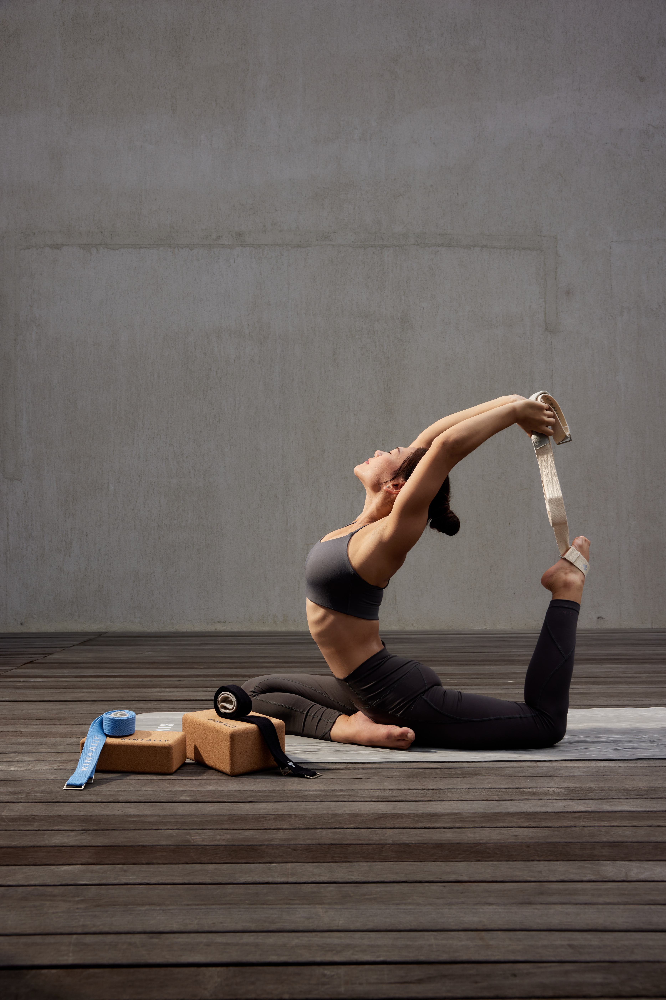

Kin + Ally is a Jakarta-based sustainable activewear brand founded in 2021 by sisters Natasha Elaine and Patricia Davina. The brand is committed to environmental responsibility, inclusivity, and ethical production practices. The brand’s offerings include sports bras, leggings, yoga mats, towels, and accessories, all designed with sustainability in mind. Products like the GripPRO Yoga Mat are made from coconut husk fiber, PU leather, and natural rubber, while the SuperSweat Mat Towel utilizes 80% recycled PET microfiber.